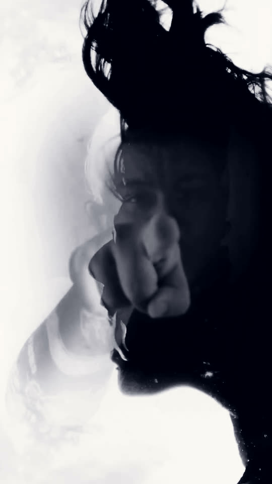
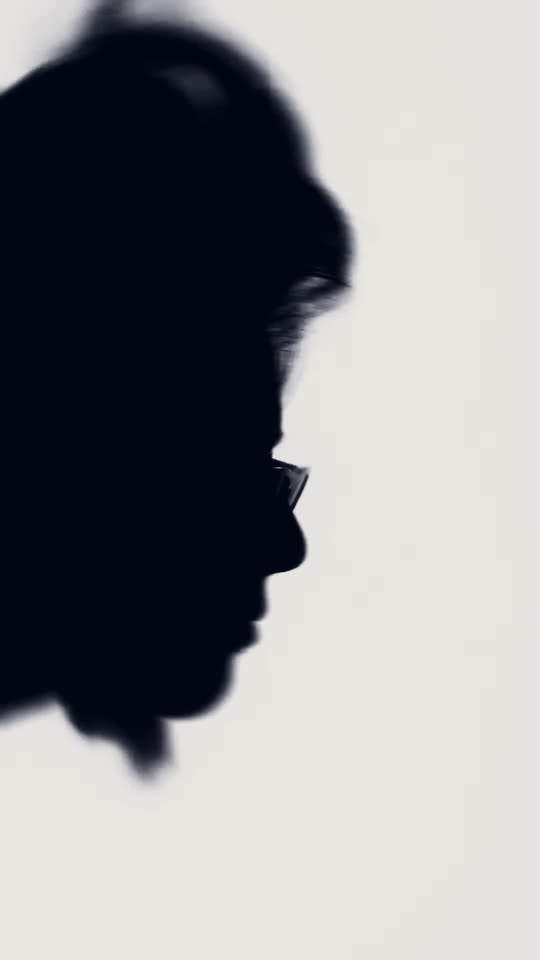

Non canto per farmi sentire da lontano. Canto per restare sott'acqua un secondo in più.
Una voce, una stanza, e il rumore che resta quando togli tutto il resto. Le canzoni nascono così: piccole, bagnate, senza niente addosso.
Quello che vedi qui sotto viene dal girato: nessuna immagine è stata aggiunta, sono tutti fotogrammi dello stesso video, rimessi in movimento dal tuo dito.
Ascolta
Tutto quello che è uscito finora. Tocca una riga per aprire la lastra.
Specchi
Lo stesso fotogramma, moltiplicato. Trascina per girarlo, tira in su o in giù per cambiare il numero di specchi.

Michelle
Scrive canzoni che stanno sotto la superficie.
Voce e chitarra, registrate vicino: quello che si sente è la stanza, non lo studio. I pezzi partono da una frase detta a mezza voce e finiscono quando smettono di chiedere attenzione.
Dal vivo è un set breve, senza scaletta fissa, che cambia forma a seconda di dove suona.

Scrivi
Per una data, un festival, una collaborazione. Si risponde a tutti.
— Tocca l'indirizzo per copiarlo